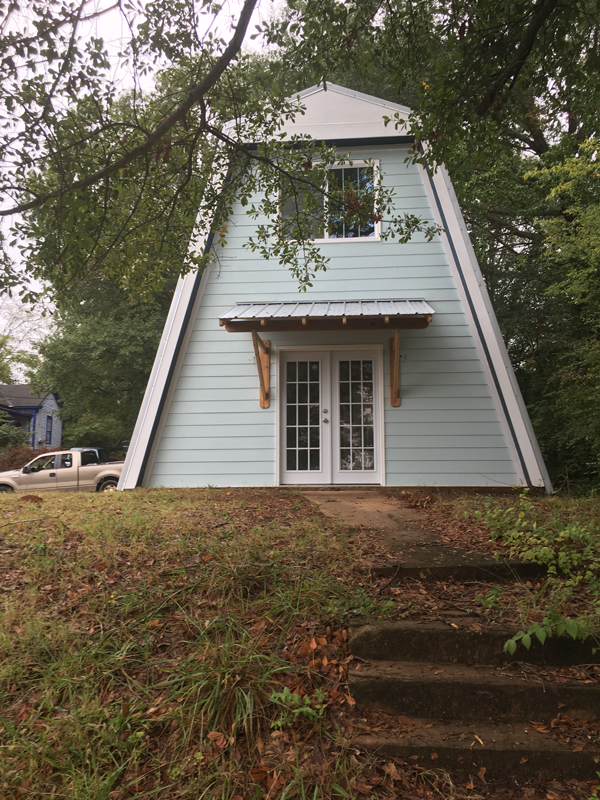
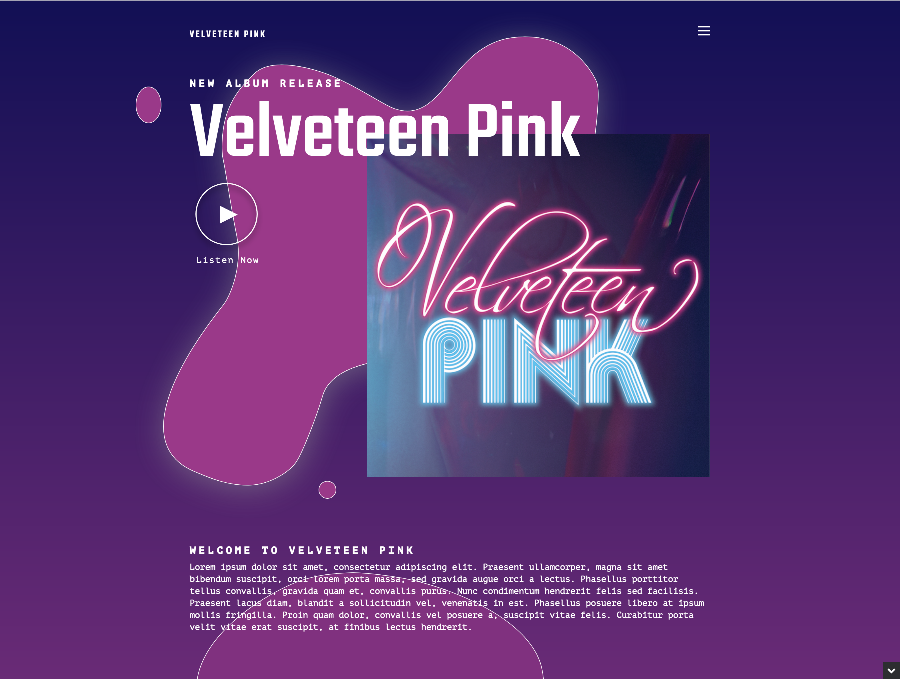
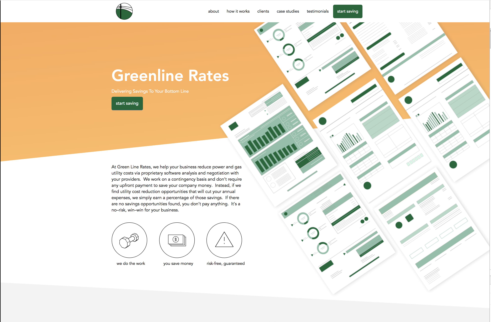
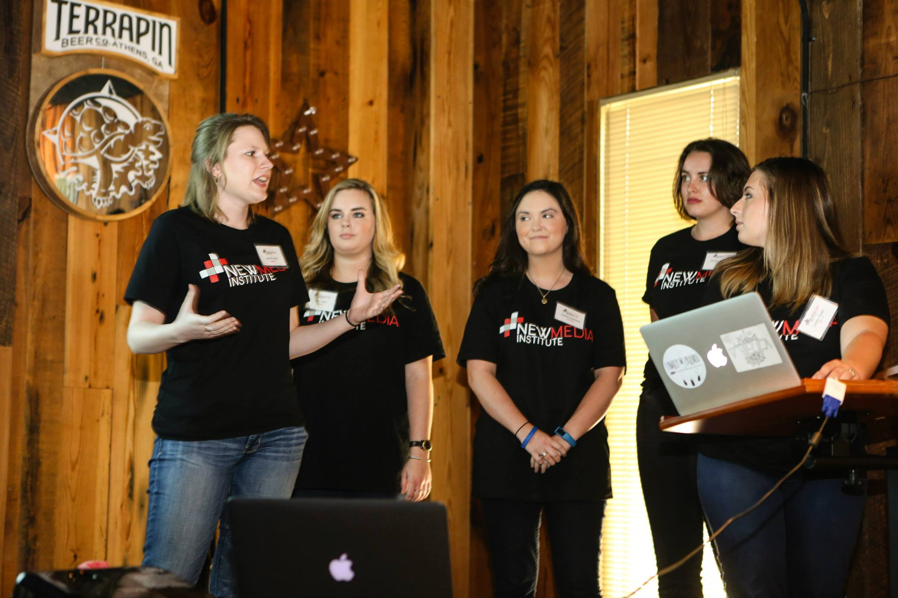
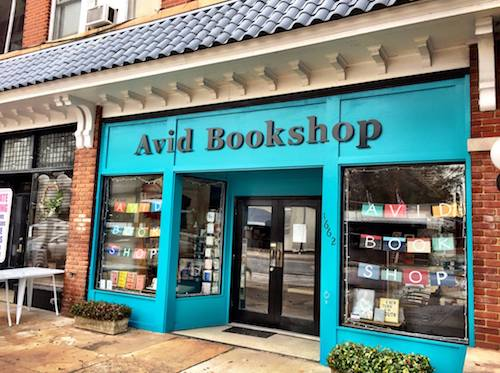

Freelancing 101
Working for yourself & doing it by your own rules
Hi I'm Allison!
I am a freelance web designer & developer
and I'm based in Athens, GA
I am a proud 2015 NMI Alum
I also got a major in Journalism & a minor in Spanish.
I live & work in an A-Frame
with my pug named Daisy
I design and build websites
Which means I create design mockups
Usually with Sketch
And then I build a website based on those mockups
Usually on Wordpress or Drupal
and sometimes on Shopify
I have 20+ clients and counting
They are from all over the nation
but a lot are in Athens & Atlanta
Lamar Dodd School of Arts
Velveteen Pink
Context Gallery

Greenline Rates
And many more!
Why freelancing?
Why not some ~cool~ tech job at a start-up on the West Coast?
Because I'm in CONTROL
Freelancers choose their schedule.
Choose where they work.
Choose their rates.
Choose who they work with.
You can be your own boss!
Why website design & development?
It all began during my first NMI productions class
with Emuel Aldrige!
At first, I was really bad at coding.
But I really wanted to be the programmer for my senior capstone project.
So I made coding my #1 obsession.

And I was one of the programmers of my senior year Capstone group!
And then I graduated!
with no job!

Applied to a few developer jobs
and got rejected
because I didn't have a "CS degree from Georgia Tech"
Then I started applying to small agencies.
And I got a job!
as a catch-all designer/website editor
and then I got to WORK
so I asked for a raise.
after six months.

I didn't get a raise.
Not even the two more times I'd ask for one :D
That's when I started freelancing
On the side.
And I loved it!
And then I built my freelancing portfolio site!

But this is how the agency reacted
That's when I became a fulltime freelancer
With $4 dollars to my name!
First Month:
Door to Door Website Saleswoman
Avid Bookshop
The next six months:
Hustle, Hustle, Hustle
The next six months after that:
Keep Hustling & Pay off Debt
One year in full-time freelancing:
Debt Free & booked solid
Actually overbooked!
2018
The year for better workflow & better work
What it takes to be a freelancer
You need to have a hard skill.
You need to have a hard skill that businesses will pay for.
You need to be able to see a project from beginning to completion by yourself.
Also, be ready to work
More than your 9-5 job.
This is where time management comes in.
Know Your Money
Don't feel weird talking about money.
Save for taxes.
Save your money.
And lastly,
Be a Decent Person to Work with
Say Hi
twitter: @skinner_design
instagram: @a.l.l.is.on
daisy's instagram: @pugonpulaski
website: allisondskinner.com
email: allisondskinner@gmail.com